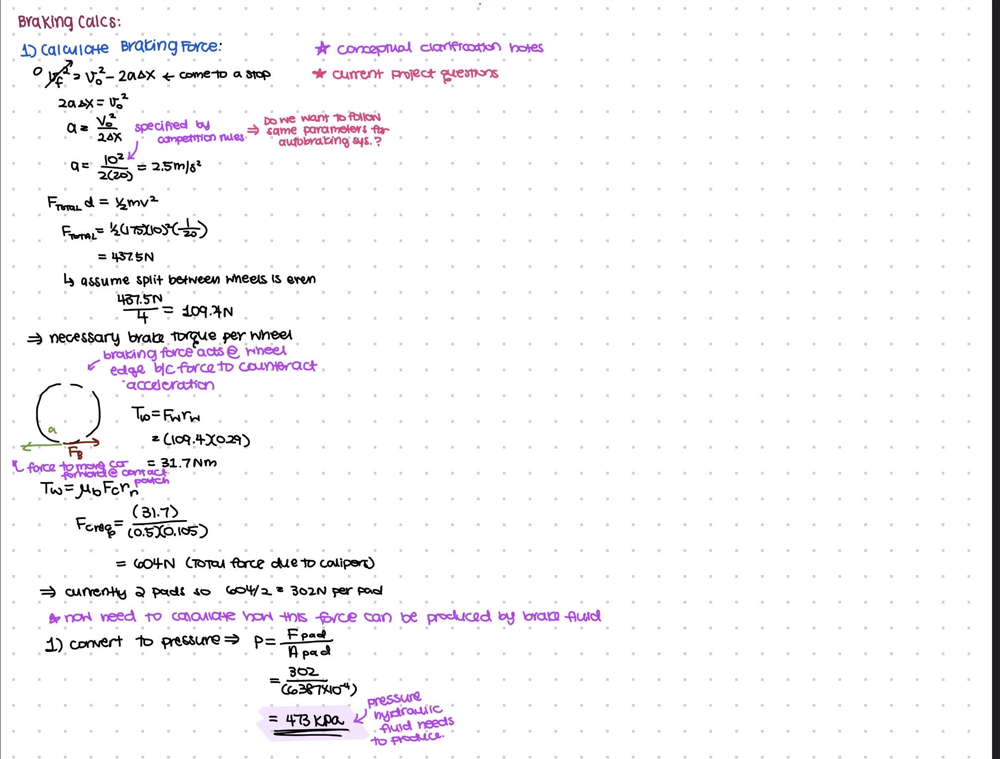
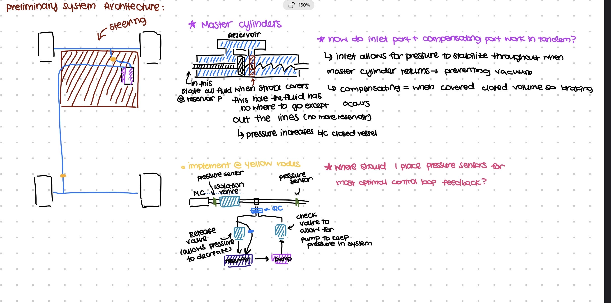
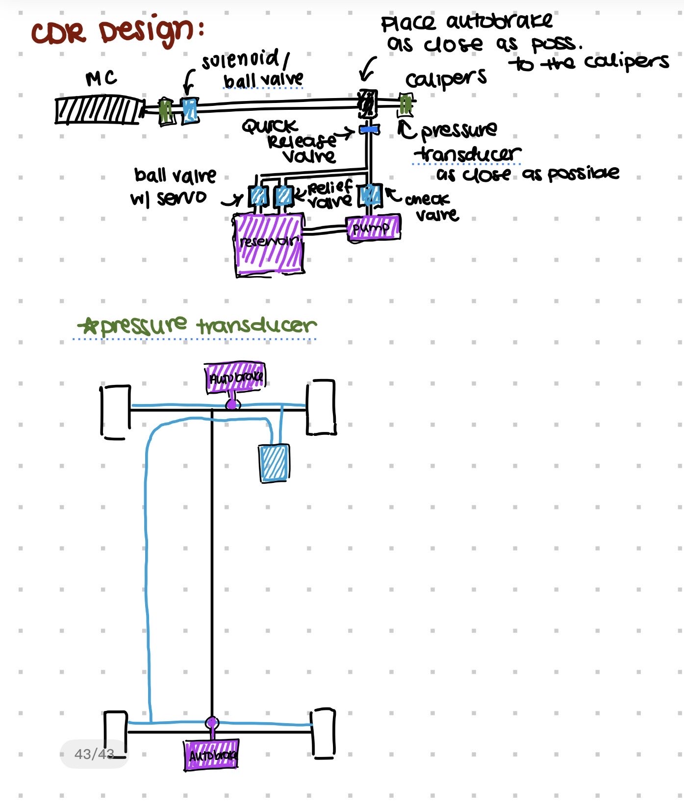

everything autonomous must be removable
shell eco-marathon is an efficiency competition, and level 3 autonomy is a separate goal set by the team. every system added to make the vehicle autonomous therefore has to be easily removable.
unexplored territory with a 3-week implementation timeline. after running into controls and torque issues with a motor-actuated brake shaft, we're pivoting to a hydraulic autobraking system. this is our first time putting pumps and valves on the vehicle and working with an actively controlled autonomous hydraulic system.
why the previous approach is being replaced.
shell eco-marathon is an efficiency competition, and level 3 autonomy is a separate goal set by the team. every system added to make the vehicle autonomous therefore has to be easily removable.
in previous years a motor actuated the base of the brake shaft, since that was the most modular option. we used a motor and gearbox with an electromagnetic clutch, but ran into interfacing issues between the pivoting shaft and the motor (gearbox lifting and misalignment), along with control issues. so we decided to pivot.
the requirements guiding the design.
easily removed and attached to the vehicle.
integrates seamlessly with the autonomous system.
precise control over braking.
operates safely.
working through the braking calculations to find how much pressure is required for full braking.

stopping from 10 m/s in 20 m needs a deceleration of about 2.5 m/s². with the vehicle mass used in the calculation, that requires a total braking force of about 437.5 n, or about 109.4 n per wheel assuming an even split.
that force acts at the wheel edge, giving a brake torque of about 31.7 n·m per wheel. with a friction coefficient of 0.5 and a 0.105 m effective radius, the calipers must clamp with about 604 n total, or 302 n per pad with two pads.
dividing by the pad area gives the pressure the hydraulic fluid has to produce: about 473 kpa (about 68.6 psi).
a basic circuit based on my first intuition and other online papers.

talking with people experienced with valves to refine the design.
i met with the propulsion lead of cornell rocketry and asked about their experience, recommendations, redundancies, and how to spec various parts. what i took away:
operate at a relatively safe, low-pressure system.
include a passive relief valve.
talk in depth with the electrical and autonomy sub-teams to specify the pressure transducers.
a cdr-ready design based on those recommendations, research, and additional hand calculations.

calculations for sizing the pump.
calculations to verify the passive relief valve limits.